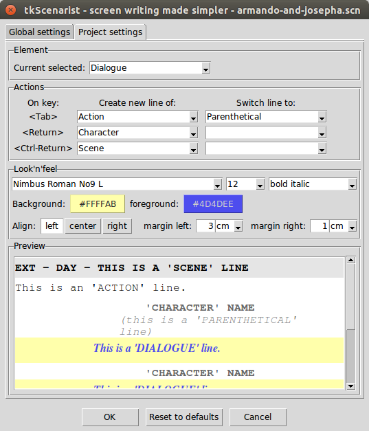

Return to summary.
This tool allows to refine scenario elements' chaining process and look'n'feel.
It is composed of stacked panes:
Extra tool panes are NOT resizable.
CAUTION: one may read carefully 'Scenario' tab documentation page before trying to tune up scenario editor settings.
Our team does NOT provide any support for eventual misuses of this extra tool.
Return to summary.
Select this tab before setting up preferences globally to any future new project file.
Please, note Project settings always override Global settings into
an open project file.
To see your global settings take in effect, first save current project
file and then ask for a new one with Project > New option menu or
with <Ctrl-N> keyboard shortcut.
People willing to reset all their settings should refer to 'Reset to defaults' button page section below.
Return to summary.
Select this tab before setting up preferences only for the current open project file.
Please, note Project settings always override Global settings into
an open project file.
Each time you save your project file, you also save its Project
settings within it. Don't get fooled by this.
People willing to reset all their current project settings should refer to 'Reset to defaults' button page section below.
Return to summary.
Please, refer to 'Scenario' tab documentation for more detail on scenario elements chaining process.
Return to summary.
By default, the dropdown list shows off current selected scenario element.
To select another element to edit, simply click on the arrowed button on the right side of the list and select an item into the dropped down list.
One may also select a new element through the 'Preview' pane.
Return to summary.
Select into each dropdown list of this 'Actions' pane the element you wish to get on chaining process for the current selected element in 'Element' pane.
Let's say, for example, current selected element is Dialogue (see
screenshot).
What user will get on his scenario text editor?
If insertion cursor is into an EMPTY line:
<Tab> key will switch current empty line from
Dialogue to Parenthetical;<Return> key will do nothing, as nothing is
mentioned into dropdown list at this place;<Ctrl-Return> shortcut, nothing will happen.If insertion cursor is into a NON-EMPTY line:
<Tab> key will create a new line of Action
element;<Return> key will create a new line of
Character element;<Ctrl-Return> shortcut will create a new line of Scene
element.And so on. Try combinations by yourself and see what's best for you.
People willing to reset hazardous settings should refer to 'Reset to defaults' button page section below.
Return to summary.
Play with each choice list and see what you get into 'Preview' pane.
This is the best way to understand how all of this works.
Return to summary.
The 'Preview' pane reflects immediately any look'n'feel change to help you see what you get when playing with choice lists in 'Look'n'feel' pane.
One may also select a new scenario element to edit by simply clicking on the line illustrating the given element.
Return to summary.
This dialog tool button definitely validates your new settings into software's memory.
Please, note:
global settings are really saved on disk only when quitting app; if an error occurs during this time, settings are NOT warrantied to be correctly saved;
project settings are really saved only when you decide to save your project file on disk, as these settings are saved within your project file; it's up to you to save regularly your work.
Return to summary.
Using Reset to defaults button depends on selected tab at this
moment:
with 'Global settings' tab selected, global
settings will be reset to factory defaults (app defaults) and will
be available next time you restart software or next time you ask for a
new project i.e. with Project > New menu option or with <Ctrl-N>
keyboard shortcut;
with 'Project settings' tab selected, project settings will be reset to current global settings, no matter if they are correct or not.
Please, note to get out from a trap, the best way still remains to first reset global settings and then reset project settings, validate dialog tool, save project file, close app and finally restart app (for cleaner situation).
Return to summary.
This button revokes all new settings made before quitting this dialog tool.
All changes will then be definitely LOST.
You can also cancel this dialog tool by pressing down <Escape> key.
Return to summary.
IMPORTANT: don't forget to save your project regularly, either
with Project > Save menu option or with <Ctrl-S> keyboard shortcut.
Return to summary.
Return to homepage.